토목기사 (2014-09-20 기출문제)
1과목: 응용역학
1. 그림과 같은 반경이 r인 반원 아치에서 D점의 축방향력 ND의 크기는 얼마인가?
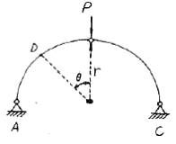
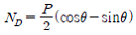
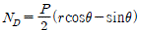
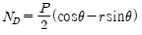
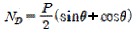
(정답률: 55%)

2. 직경 D인 원형 단면의 단면 계수는?
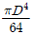
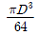
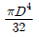
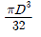
(정답률: 73%)
3. 다음 트러스에서 AB부재의 부재력으로 옳은 것은?
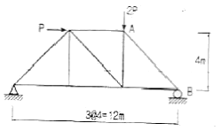
- 1.179 P(압축)
- 2.357 P(압축)
- 1.179 P(인장)
- 2.357 P(인장)
(정답률: 67%)
4. 15㎝×30㎝의 직사각형 단면을 가진 길이 5m인 양단힌지 기둥이 있다. 세장비 λ는?
- 57.7
- 74.5
- 115.5
- 149
(정답률: 76%)
5. 그림과 같이 단면적이 A1=100cm2이고, A2=50cm2인 부재가 있다. 부재 양끝은 고정되어 있고 온도가 10℃ 내려갔다. 온도 저하로 인해 유발되는 단면력은? (단, E=2.1×106kg/cm2, 선팽창계수(α)=1×10-5/℃)
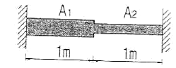
- 10,500kg
- 14,000kg
- 15,750kg
- 21,000kg
(정답률: 58%)
6. 평면응력상태 하에서의 모아(Mohr)의 응력원에 대한 설명 중 옳지 않은 것은?
- 최대 전단응력의 크기는 두 주응력의 차이와 같다.
- 모아 원의 중심의 x좌표값은 직교하는 두 축의 수직응력의 평균값과 같고 y좌표값은 0이다.
- 모아 원이 그려지는 두 축 중 연직(y)축은 전단응력의 크기를 나타낸다.
- 모아 원으로부터 주응력의 크기와 방향을 구할 수 있다.
(정답률: 74%)
7. 길이 20㎝, 단면 20㎝×20㎝인 부재에 100t의 전단력이 가해졌을 때 전단 변형량은? (단, 전단 탄성계수 G=80000kg/cm2이다.)
- 0.0625cm
- 0.00625cm
- 0.0725cm
- 0.00725cm
(정답률: 66%)
8. 다음 구조물에서 B점의 수평방향 반력 RB를 구한 값은? (단, EI는 일정)
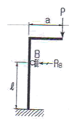
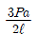
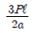
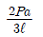
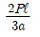
(정답률: 57%)
9. 재질과 단면이 같은 아래 2개의 캔틸레버보에서 자유단의 처짐을 같게 하는 P1/P2의 값으로 옳은 것은?
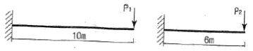
- 0.112
- 0.187
- 0.216
- 0.308
(정답률: 75%)
10. 그림과 같은 단순보에 모멘트 하중 M이 B단에 작용할 때 C점에서의 처짐은?
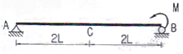
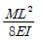
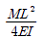
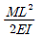
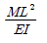
(정답률: 49%)
11. 강재에 탄성한도보다 큰 응력을 가한 후 그 응력을 제거한 후 장시간 방치하여도 얼마간의 변형이 남게 되는데 이러한 변형을 무엇이라 하는가?
- 탄성변형
- 피로변형
- 소성변형
- 취성변형
(정답률: 61%)
12. 그림과 같은 단면을 갖는 부재(A)와 부재(B)가 있다. 동일 조건의 보에 사용하고 재료의 강도도 같다면, 휨에 대한 강도를 비교한 설명으로 옳은 것은?
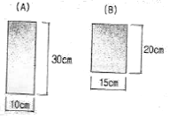
- 보(A)는 보(B)보다 휨에 대한 강성이 2.0배 크다.
- 보(B)는 보(A)보다 휨에 대한 강성이 2.0배 크다.
- 보(B)는 보(A)보다 휨에 대한 강성이 1.5배 크다.
- 보(A)는 보(B)보다 휨에 대한 강성이 1.5배 크다.
(정답률: 56%)
13. 다음 내민보에서 B점의 모멘트와 C점의 모멘트의 절대값의 크기를 같게 하기 위한 L/a의 값을 구하면?
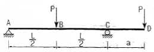
- 6
- 4.5
- 4
- 3
(정답률: 64%)
14. 탄성변형에너지는 외력을 받는 구조물에서 변형에 의해 구조물에 축적되는 에너지를 말한다. 탄성체이며 선형거동을 하는 길이가 L인 켄틸레버보에 집중하중 P가 작용할 때 굽힘모멘트에 의한 탄성 변형에너지는? (단, EI는 일정)
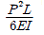
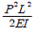
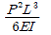
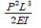
(정답률: 75%)
15. 그림과 같은 단면에 전단력 V=60t이 작용할 때 최대 전단응력은 약 얼마인가?
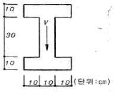
- 127kg/cm2
- 160kg/cm2
- 198kg/cm2
- 213kg/cm2
(정답률: 71%)
16. 그림과 같은 캔틸레버보에서 하중을 받기전 B점의 1㎝ 아래에 받침부(B')가 있다. 하중 20t이 보의 중앙에 작용할 경우 B'에 작용하는 수직반력의 크기는? (단, EI=2.0×1012kg·cm2이다.)
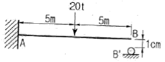
- 200kg
- 250kg
- 300kg
- 350kg
(정답률: 46%)
17. 그림과 같이 이축응력(二軸應力)을 받고 있는 요소의 체적변형율은?(단, 탄성계수 E=2×106kg/cm2, 프와송비 v=0.3)
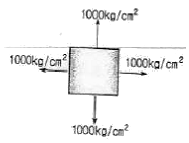
- 2.7×10-4
- 3.0×10-4
- 3.7×10-4
- 4.0×10-4
(정답률: 78%)
18. 다음 그림에서 A점 모멘트 반력은 ?(단 각 부재의 길이는 동일함.)
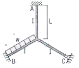
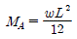
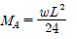
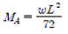
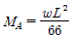
(정답률: 71%)
19. 그림과 같은 강재(steel) 구조물이 있다. AC, BC 부재의 단면적은 각각 10cm2, 20cm2이고 연직하중 P=9t이 작용할 때 C점의 연직처짐을 구한 값은? (단, 강재의 종탄성계수는 2.⑤×106kg/cm2 이다.)
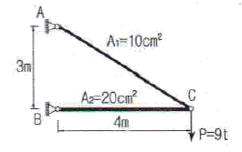
- 1.022cm
- 0.766cm
- 0.518cm
- 0.383cm
(정답률: 70%)
20. 단순보 AB위에 그림과 같은 이동하중이 지날 때 A점으로부터 10m 떨어진 C점의 최대 휨모멘트는?
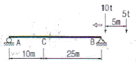
- 85t
- 95t
- 100t
- 115t
(정답률: 65%)
2과목: 측량학
21. 시가지에서 25변형 폐합트래버스측량을 한 결과 측각오차가 1' 5"이었을 때, 이 오차의 처리는? (단, 시가지에서의 허용 오차:
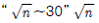
, n:트래버스의 측점 수, 각 측정의 정확도는 같다.)- 오차를 각 내각에 균등배분 조정한다.
- 오차가 너무 크므로 재측(再測)을 하여야 한다.
- 오차를 내각(內角)의 크기에 비례하여 배분 조정한다.
- 오차를 내각(內角)의 크기에 반비례하여 배분 조정한다.
(정답률: 66%)
22. 줄자로 거리를 관측할 때 한 구간 20m의 정오차가 +2mm라면 전 구간 200m를 측정했을 때 정오차는?
- +0.2mm
- +0.63mm
- +6.3mm
- +20mm
(정답률: 59%)
23. 삼각형의 토지면적을 구하기 위해 밑변 a와 높이 h를 구하였다. 토지의 면적과 표준오차는? (단, a=15±0.015m, h=25±0.025m)
- 187.5±0.04m2
- 187.5±0.27m2
- 375.0±0.27m2
- 375.0±0.53m2
(정답률: 64%)
24. 지형공간전보체계의 활용분야 중 토목분야의 시설물을 관리하는 정보체계는?(오류 신고가 접수된 문제입니다. 반드시 정답과 해설을 확인하시기 바랍니다.)
- TIS
- LIS
- NDIS
- FM
(정답률: 60%)
25. 대상구역을 삼각형으로 분할하여 각 교점의 표고를 측량한 결과가 그림과 같을 때 토공량은?
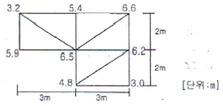
- 98m3
- 100m3
- 102m3
- 104m3
(정답률: 67%)
26. 트래버스측량의 각 관측 방법 중 방위각법에 대한 설명으로 틀린 것은?
- 진북을 기준으로 어느 측선까지 시계 방향으로 측정하는 방법이다.
- 험준하고 복잡한 지역에서는 적합하지 않다.
- 각각이 독립적으로 관측되므로 오차 발생시, 각각의 오차는 이후의 측량에 영향이 없다.
- 각 관측값의 계산과 제도가 편리하고 신속히 관측할 수 있다.
(정답률: 75%)
27. 노선측량의 단곡선 설치 방법 중 간단하고 신속하게 작업할 수 있어 철도, 도로 등의 기설곡선 검사에 주로 사용되는 것은?
- 중앙종거법
- 편각설치법
- 절선편거와 현편거에 의한 방법
- 절선에 대한 지거에 의한 방법
(정답률: 66%)
28. 축척 1:1500 지도상의 면적을 잘못하여 축척 1:1000으로 측정하였더니 10000m2가 나왔다면 실제면적은?
- 4444m2
- 6667m2
- 15000m2
- 22500m2
(정답률: 71%)
29. 곡선 반지름이 500m인 단곡선의 종단현이 15.343m이라면 이에 대한 편각은?
- 0˚ 31' 37"
- 0˚ 43' 19"
- 0˚ 52' 45"
- 1˚ 04' 26"
(정답률: 65%)
30. 그림과 같은 복곡선에서 t1+t2의 값은?
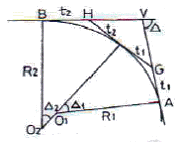
- R1(tan△1+tan△2)
- R2(tan△1+tan△2)
- R1tan△1+tan△2
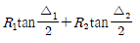
(정답률: 71%)
31. 축척 1:5000 지형도 상에서 어떤 산의 상부로부터 하부까지의 거리가 50mm이다. 상부의 표고가 125m, 하부의 표고가 75m이며 등고선의 간격이 일정할 때 이 사면의 경사는?
- 10%
- 15%
- 20%
- 25%
(정답률: 43%)
32. 초점거리 15.3㎝의 카메라로 찍은 축척 1:20000인 연직사진에서 주점으로부터의 거리가 60.3mm인 지점의 비고가 200m라면 이 비고에 의한 기복 변위량은?
- 3.7mm
- 3.9mm
- 4.1mm
- 4.3mm
(정답률: 50%)
33. 그림과 같은 삼각망에서 CD의 거리는?
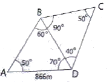
- 1732m
- 1000m
- 866m
- 750m
(정답률: 70%)
34. 양수표의 설치 장소로 적합하지 않은 곳은?
- 상, 하류 최소 50m 정도의 곡선인 장소
- 홍수시 유실 또는 이동의 염려가 없는 장소
- 수위가 교각 및 그 밖의 구조물에 의해 영향을 받지 않는 장소
- 평상시는 물론 홍수때에도 쉽게 양수표를 읽을 수 있는 장소
(정답률: 72%)
35. A, B, C 각 점에서 P점까지 수준측량을 한 결과가 표와 같다. 거리에 대한 경중률을 고려한 P점의 표고 최확값은?
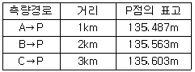
- 135.529m
- 135.551m
- 135.563m
- 135.570m
(정답률: 72%)
36. 항공사진의 표정작업 중 수준면의 결정 및 사진축척을 결정하는 표정은?
- 접합표정
- 절대표정
- 상호표정
- 내부표정
(정답률: 58%)
37. 다음 설명 중 틀린 것은?
- 지자기 측량은 지자기가 수평면과 이루는 방향 및 크기를 결정하는 측량이다.
- 지구의 운동이란 극운동 및 자전운동을 의미하며, 이들을 조사함으로써 지구의 운동과 지구내부의 구조 및 다른 행성과의 관계를 파악할 수 있다.
- 지도제작에 관한 지도학은 입체인 구면상에서 측량한 결과를 평면인 도지 위에 정확히 표시하기 위한 투영법을 포함하고 있다.
- 탄성파 측량은 지진조사, 광물탐사에 이용되는 측량으로 지표면으로부터 낮은 곳은 반사법, 깊은 곳은 굴절접을 이용한다.
(정답률: 61%)
38. 측량에서 일적으로 지구의 곡률을 고려하지 않아도 되는 최대 범위는? (단. 거리의 정밀도는 10-6까지 허용하며 지구 반지름은 6370km 이다.)
- 약 100㎢ 이내
- 약 380㎢ 이내
- 약 1000㎢ 이내
- 약 1200㎢ 이내
(정답률: 56%)
39. 평판측량의 방사법에 관한 설명으로 옳은 것은?(문제 오류로 보기 내용이 누락되어 있습니다. 정답은 4번입니다. 누락 내용을 아시는분 께서는 오류 신고를 통하여 작성 부탁 드립니다.)
- 133˚
- 135˚
- 137˚
- 145˚
(정답률: 64%)
40. 수준측량에서 레벨의 조정이 불완전하여 시준선이 기포관축과 평행하지 않을 때 생기는 오차의 소거 방법으로 옳은 것은?
- 정위, 반위로 측정하여 평균한다.
- 지반이 견고한 곳에 표척을 세운다.
- 전시와 후시의 시준거리를 같게 한다.
- 시작점과 종점에서의 표척을 같은 것을 사용한다.
(정답률: 77%)
3과목: 수리학 및 수문학
41. 다음 설명 중 옳지 않은 것은?
- 토리첼리 정리는 위치수두를 속도수두로 바꾸는 경우이다.
- 직사각형 위어에서 유량은 월류수심(H)의 H⅔에 비례한다.
- 베르누이 방정식이란 일종의 에너지 보존 법칙이다.
- 연속방정식이란 일종의 질량 보존의 법칙이다.
(정답률: 63%)
42. 수중에 설치된 오리피스의 수두차가 최대 4.9m이고 오리피스의 유량계수가 0.5일 때 오리피스 유량의 근사값은? (단, 오리피스의 단면적은 0.01m2이고, 접근유속은 무시한다.)
- 0.025m3/s
- 0.049m3/s
- 0.098m3/s
- 0.196m3/s
(정답률: 71%)
43. 피압 지하수를 설명한 것으로 옳은 것은?
- 하상 밑의 지하수
- 어떤 수원에서 다른 지역으로 보내지는 지하수
- 지하수와 공기가 접해있는 지하수면을 가지는 지하수
- 두 개의 불투수층 사이에 끼어 있어 대기압보다 큰 압력을 받고 있는 대수층의 지하수
(정답률: 71%)
44. 양수기의 동력 [kW]을 구하는 공식으로 옳은 것은? (단, Q:유량[m3/sec], η:양수기의 효율, H:총 양정[m])
- E=9.8HQη
- E=13.33HQη
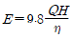
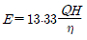
(정답률: 75%)
45. 속도변화를 △v, 질량을 m이라 할 때, △t 시간동안 이 물체에 작용하는 외력 F에 대한 운동량 방정식은?
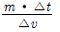
- m·△v·△t
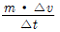
- m·△t
(정답률: 66%)
46. 개수로에서 도수 발생시 사류 수심을 h1, 사류의 Froude수를 Fr1이라 할 때, 상류 수심h2를 나타낸 식은?
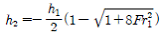
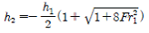
(정답률: 64%)
47. 직각삼각형 예연 위어의 월류수심이 30㎝일 때 이 위어를 통과하여 1시간 동안 방출된 수량은? (단, 유량계수(C)=0.6)
- 0.069m3
- 0.091m3
- 251.3m3
- 318.8m3
(정답률: 31%)
48. 강우강도에 대한 설명으로 틀린 것은?
- 강우깊이(mm)가 일정할 때 강우지속 시간이 길면 강우강도는 커진다.
- 강우강도와 지속시간의 관계는 Talbot, Sherman, Japanese형 등의 경험공식에 의해 표현된다.
- 강우강도식은 지역에 따라 다르며, 자기우량계의 우량자료로부터 그 지역의 특성 상수를 결정한다.
- 강우강도식은 댐, 우수관거 등의 수공구조물의 중요도에 따라 그 설계 재현기간이 다르다.
(정답률: 70%)
49. 관수로 내의 손실수두에 대한 설명 중 틀린 것은?
- 관수로 내의 모든 손실수두는 속도수두에 비례한다.
- 마찰손실 이외의 손실수두를 소손실(minor loss)이라 한다.
- 물이 관수로 내에서 큰 수조로 유입할 때 출구의 손실수두는 속도수두와 같다고 가정할 수 있다.
- 마찰손실수두는 모든 손실수두 가운데 가장 크며 이것은 마찰손실계수를 속도수두에 곱한 것이다.
(정답률: 58%)
50. 대기압이 762mmHg로 나타날 때 수은주 3⑤mm의 진공에 해당하는 절대압력의 근사값은? (단, 수은의 비중은 13.6이다.)
- 41N/m2
- 61N/m2
- 40650N/m2
- 60909N/m2
(정답률: 36%)
51. Darcy의 법칙(v=k·l)에 관한 설명으로 틀린 것은? (단, k는 투수계수, l는 동수경사)
- Darcy의 법칙은 물의 흐름이 층류일 경우에만 적용 가능하고, 흐름 방향과는 무관하다.
- 대수층의 유속은 동수경사에 비례한다.
- 유속 v는 입자 사이를 흐르는 실제유속을 의미한다.
- 투수계수 k는 흙입자 크기, 공극률, 물의 점성계수 등에 관계된다.
(정답률: 60%)
52. 내경 10㎝의 관수로에 있어서 관벽의 마찰에 의한 손실수두가 속도수두와 같을 때 관의 길이는? (단, 마찰손실계수(f)는 0.03이다.)
- 2.21m
- 3.33m
- 4.99m
- 5.46m
(정답률: 62%)
53. 지하수의 연직분포를 크게 나누면 통기대와 포화대로 나눌 수 있다. 다음 중 통기대에 속하지 않는 것은?
- 토양수대
- 중간수대
- 모관수대
- 지하수대
(정답률: 57%)
54. 강우로 인한 유수가 그 유역 내의 가장 먼 지점으로부터 유역출구까지 도달하는데 소요되는 시간을 의미하는 것은?
- 강우지속시간
- 지체시간
- 도달시간
- 기저시간
(정답률: 72%)
55. 다음 중 무차원이 아닌 것은?
- 후루드 수
- 투수계수
- 운동량 보정계수
- 비중
(정답률: 69%)
56. 그림과 같은 지름 3m, 길이 8m인 수문에 작용하는 전수압 수평분력 작용점까지의 수심은?
- 2.00m
- 2.12m
- 2.34m
- 2.43m
(정답률: 35%)
57. 하천의 모형실험에 주로 사용되는 상사법칙은?
- Froude의 법칙
- Reynolds의 상사법칙
- Weber의 상사법칙
- Cauchy의 상사법칙
(정답률: 66%)
58. DAD 해석에 관계되는 요소로 짝지어진 것은?
- 수심, 하천 단면적, 홍수기간
- 강우깊이, 면적, 지속기간
- 적설량, 분포면적, 적설일수
- 강우량, 유수단면적, 최대수심
(정답률: 76%)
59. 단위유량도(Unot hydrograph)에 대한 설명으로 틀린 것은?
- 동일한 유역에 강도가 다른 강우에 대해서도 지속기간이 같으면 기저시간도 같다.
- 일정시간 동안에 n배 큰 강도의 강우 발생시 수문곡선 종거는 n배 커진다.
- 지속기간이 비교적 긴 강우사상을 택하여 해석하여야 정확한 결과가 얻어진다.
- n개의 강우로 인한 총 유출수문 곡선은 이들 n개의 수문곡선 종거를 시간에 따라 합함으로써 얻어진다.
(정답률: 49%)
60. 배수(back water)에 대한 설명 중 옳은 것은?
- 개수로의 어느 곳에 댐 등으로 인하여 흐름차단이 발생함으로써 수위가 상승되는 영향이 상류쪽으로 미치는 현상을 말한다.
- 수자원 개발을 위하여 저수지에 물을 가두어 두었다가 용수 부족시에 사용하는 물을 말한다.
- 홍수시에 제내지에 만든 유수지의 수면이 상승되는 현상을 말한다.
- 관수로 내의 물을 급격히 차단할 경우 관내의 상승 압력으로 인하여 습파가 생겨서 상류쪽으로 습파가 전달되는 현상을 말한다.
(정답률: 59%)
4과목: 철근콘크리트 및 강구조
61. 그림과 같은 T형 단면의 보에서 설계 휨모멘트강도(øMn)을 구하면? (단, 과소 철근보이고, fck=21MPa. fu=400MPa, As=1926mm2이고, 인장지배단면이다.)
- 152.3kNㆍm
- 178.6kNㆍm
- 197.8kNㆍm
- 215.2kNㆍm
(정답률: 61%)
62. 폭이 300mm, 유효깊이가 500mm인 단철근 직사각형보 단면에서 fck=35MPa, fu=350MPa 일 때, 강도설계법으로 구한 균형철근량은 약 얼마인가?
- 5285mm2
- 5890mm2
- 6450mm2
- 7235mm2
(정답률: 61%)
63. 자중을 포함한 계수등분포하중 75kN/m를 받는 단철근 직사각형단면 단순보가 있다. fck=28MPa, 경간은 8m이고, b=400mm, d=600mm일 때 다음 설명 중 옳지 않은 것은?
- 위험단면에서의 전단력은 255kN이다.
- 콘크리트가 부담할 수 있는 전단강도는 211.7kN이다.
- 부재축에 직각으로 스터럽을 설치하는 경우 그 간격은 300mm 이하로 설치하여야 한다.
- 최소 전단철근을 포함한 전단철근이 칠요한 구간은 지점으로부터 1.92m까지이다.
(정답률: 43%)
64. 철근 콘크리트 강도설계법의 기본 사정에 관한 사항 중 옳지 않은 것은?
- 압축측 콘크리트의 최대 변형률은 0.003으로 가정한다.
- 철근 및 콘크리트의 변형률은 중립축으로부터의 거리에 비례한다.
- 설계기준항복강도 fy는 450MPa을 초과하여 적용할 수 없다.
- 콘크리트 압축 응력 분포는 등가 직사각형 분포로 생각해도 좋다.
(정답률: 68%)
65. 과도한 처짐에 의해 손상되기 쉬운 비구조 요소를 지지 또는 부착한 지붕 또는 바닥구조의 최대 허용처짐은? (단, ℓ은 부재의 길이이고, 콘크리트구조기준 교정을 따른다.)
(정답률: 45%)
66. 그림과 같이 긴장재를 포물설으로 배치하고, P=2500kN으로 긴장했을 때 발생하는 등분포 상향력을 등가하중의 개념으로 구한 값은?
- 10kN/m
- 15kN/m
- 20kN/m
- 25kN/m
(정답률: 58%)
67. 다음 띠철근 기둥이 최소 편심하에서 받을 수 있는 설계 축하중강도(øPn(max)는 얼마인가? (단, 축방향 철근의 단면적 Ast=1865mm2, fck=28MPa, fu=300MPa이고 기둥은 단주이다.)
- 2490kN
- 2774kN
- 3075kN
- 1998kN
(정답률: 60%)
68. 강합성 교량에서 콘크리트 슬래브와 강(鋼)주형 상부플랜지를 구조적으로 일체가 되도록 결합시키는 요소는?
- 전단연결재
- 볼트
- 합성철근
- 접착제
(정답률: 62%)
69. 그림과 같은 단면을 갖는 지간 20m의 PSC보에 PS 강재가 200mm의 편심거리를 가지고 직선 배치되어 있다. 자중을 포함한 계수등분포하중 16kN/m가 보에 작용할 때, 보 중앙단면 콘크리트 상연응력은 얼마인가? (단, 유효 프리스트레스 힘 Pe=2400kN)
- 12MPa
- 13MPa
- 14MPa
- 15MPa
(정답률: 41%)
70. 아래 그림과 같은 보의 단면에서 표피철근의 간격 s는 약 얼마인가?(단. 습윤환경에 노출되는 경우로서, 표피철근의 표면에서 부재 측면까지의 최단거리(Cc)는 50mm, fck=28MPa, fu=400MPa 이다.)
- 170mm
- 190mm
- 220mm
- 240mm
(정답률: 48%)
71. 콘크리트구조물에서 비틀림에 대한 설계를 하려고 할 때, 계수비틀림모멘트(Tu)를 계산하는 방법에 대한 설명 중 틀린 것은?
- 균열에 의하여 내력의 재분배가 발생하여 비틀림 모멘트가 감소할 수 있는 부정정 구조물의 경우, 최대 계수 비틀림모멘트를 감소시킬 수 있다.
- 철근콘크리트 부재에서, 받침부로부터 d이내에 위치한 단면은 d에서 계산된 Tu보다 작지 않은 비틀림모멘트에 대하여 설계하여야 한다.
- 프리스트레스트 부재에서 받침부로부터 d이내에 위치한 단면을 설계할 때 d에서 계산된 Tu보다 작지 않은 비틀림모멘트에 대하여 설계하여야 한다.
- 정밀한 해석을 수행하지 않은 경우, 슬래브로부터 전달되는 비틀림하중은 전체 부재에 걸쳐 균등하게 분포하는 것으로 가정할 수 있다.
(정답률: 56%)
72. 그림과 같이 단순 지지된 2방향 슬래브에 등분포하중 w가 작용할 때, ab방향에 분배되는 하중은 얼마인가?
- 0.941w
- 0.⑤9w
- 0.889w
- 0.111w
(정답률: 53%)
73. 강교의 부재에 사용되는 고장력 볼트의 이음은 어떤 이음을 원칙으로 하는가?
- 마찰이음
- 지압이음
- 인장이음
- 압축이음
(정답률: 54%)
74. 단철근 직사각형보의 폭이 300mm, 유효깊이가 500mm, 높이가 600mm일 때, 외력에 의해 단면에서 휨균열을 일으키는 휨모멘트(Mcr)를 구하면?(단, fck=24MPa, 콘크리트의 파괴 계수(fr)=0.63√fck)
- 45.2kN/m
- 48.9kN/m
- 52.1kN/m
- 55.6kN/m
(정답률: 65%)
75. 철근콘크리트 부재의 전단철근에 관한 다음 설명 중 옳지 않은 것은?
- 주인장철근에 30˚ 이상의 각도로 구부린 굽힘 철근도 전단철근으로 사용할 수 있다.
- 전단철근의 설계기준항복강도는 300MPa을 초과할 수 없다.
- 부재축에 직각으로 배치된 전단철근의 간격은 d/2 이하, 600mm 이하로 하여야 한다.
- 최소 전단철근량은 보다 작지 않아야 한다.
(정답률: 48%)
76. 다음 주어진 단철근 직사각형 단면이 연성파괴를 한다면 이 단면의 공칭휨강도는 얼마인가?(단, fck=21Mpa, fy=300Mpa)
- 252.4kNㆍm
- 296.9kNㆍm
- 356.3kNㆍm
- 396.9kNㆍm
(정답률: 54%)
77. 순단면이 볼트의 구멍 하나를 제외한 단면(즉, A-B-C단면)과 같도록 피치(s)를 결정하면? (단, 구멍의 직경은 22mm이다.)
- 114.9mm
- 90.6mm
- 66.3mm
- 50mm
(정답률: 65%)
78. 그림과 같이 보의 단면은 휨모멘트에 대해서만 보강되어 있다. 설계기준에 따라 단면에 허용되는 최대 계수전단력 Vu는 얼마인가?(단, fck=22MPa, fu=400Mpa)
- 32.5kN
- 36.6kN
- 42.7kN
- 43.3kN
(정답률: 44%)
79. 다음 중 철근의 피복두께를 필요로 하는 이유로 옳지 않은 것은?
- 철근이 산화되지 않도록 한다.
- 화재에 의한 직접적인 피해를 받지 않도록 한다.
- 부착응력을 확보한다.
- 인장강도를 보강한다.
(정답률: 51%)
80. 옹벽에서 T형보로 설계하여야 하는 부분은?
- 뒷부벽식 옹벽의 뒷부벽
- 뒷부벽식 옹벽의 전면벽
- 앞부벽식 옹벽의 저판
- 앞부벽식 옹벽의 앞부벽
(정답률: 73%)
5과목: 토질 및 기초
81. 흙을 다지면 흙의 성질이 개선되는데 다음 설명 중 옳지 않은 것은?
- 투수성이 감소한다.
- 흡수성이 감소한다.
- 부착성이 감소한다.
- 압축성이 작아진다.
(정답률: 47%)
82. 아래의 그림에서 각층의 손실수두 △h1, △h2, △h3를 각각 구한값으로 옳은 것은?
- △h1=2, △h2=2, △h3=4
- △h1=2, △h2=3, △h3=3
- △h1=2, △h2=4, △h3=2
- △h1=2, △h2=5, △h3=1
(정답률: 59%)
83. 아래 그림과 같은 지반의 A점에서 전응력 σ, 간극수압 u, 유효응력 σ'을 구하면?
- σ=10.2t/m2, u=4t/m2, σ'=6.2t/m2
- σ=10.2t/m2, u=3t/m2, σ'=7.2t/m2
- σ=12t/m2, u=4t/m2, σ'=8t/m2
- σ=12t/m2, u=3t/m2, σ'=9t/m2
(정답률: 66%)
84. 포화된 점토에 대하여 비압밀비배수(UU)시험을 하였을 때의 결과에 대한 설명 중 옳은 것은? (단, ø:내부마찰각, c:점착력)
- ø와 c가 나타나지 않는다.
- ø는 "0"이 아니지만 c는 "0"이다.
- ø와 c가 모두 "0"이 아니다.
- ø는 "0"이고 c는 "0"이 아니다.
(정답률: 59%)
85. 베인전단시험(vane shear test)에 대한 설명으로 옳지 않은 것은?
- 현장 원위치 시험의 일종으로 점토의 비배수전단강도를 구할 수 있다.
- 십자형의 베인(vane)을 땅속에 압입한 후, 회전모멘트를 가해서 흙이 원통형으로 전단파괴될 때 저항모멘트를 구함으로써 비배수 전단강도를 측정하게 된다.
- 연약점토지반에 적용된다.
- 베인전단시험으로부터 흙의 내부마찰각을 측정할 수 있다.
(정답률: 61%)
86. 말뚝 지지력에 관한 여러가지 공식 중 정역학적 지지력 공식이 아닌 것은?
- 의 공식
- Terzaghi의 공식
- Meyerhof의 공식
- Engineering-News 공식
(정답률: 69%)
87. 깊은 기초의 지지력 평가에 관한 설명으로 틀린 것은?
- 정역학적 지지력 추정방법은 논리적으로 타당하나 강도 정소를 추정하는데 한계성을 내포하고 있다.
- 동역학적 방법은 항타장비, 말뚝과 지반조건이 고려된 방법으로 해머 효율의 측정이 필요하다.
- 현장 타설 콘크리트 말뚝 기초는 동역학적 방법으로 지지력을 추정한다.
- 말뚝 항타분석기(PDA)는 말뚝의 응력분포, 경시효과 및 해머 효율을 파악할 수 있다.
(정답률: 58%)
88. 지표가 수평인 곳에 높이 5m의 연직옹벽이 있다. 흙의 단위중량이 1.8t/m3, 내부 마찰각이 30˚이고 점착력이 없을 때 주동토압은 얼마인가?
- 4.5t/m
- 5.5t/m
- 6.5t/m
- 7.5t/m
(정답률: 50%)
89. 현장 흙의 들밀도시험 결과 흙을 파낸 부분의 체적과 파낸 흙의 무게는 각각 1800㎝˚, 3.95kg이었다. 함수비는 11.2%이고, 흙의 비중 2.65이다. 최대건조 단위중량이 2.⑤g/㎝˚일 때 상대다짐 정도는?
- 95.1%
- 96.1%
- 97.1%
- 98.1%
(정답률: 55%)
90. 포화된 흙의 건조단위중량이 1.70t/m3이고, 함수비가 20%일 때 비중은 얼마인가?
- 2.58
- 2.68
- 2.78
- 2.88
(정답률: 44%)
91. 중심간격이 2.0m, 지름 40㎝인 말뚝을 가로 4개, 세로 5개씩 전체 20개의 말뚝을 박았다. 말뚝 한 개의 허용지지력이 15ton이라면 이 군항의 허용지지력은 약 얼마인가? (단, 군말뚝의 효율은 Converse-Labarre 공식을 사용)
- 450.0t
- 300.0t
- 241.5t
- 114.5t
(정답률: 46%)
92. 그림과 같이 c=0인 모래로 이루어진 무한사면이 안정을 유지(안전율 ≥1)하기 위한 경사각 β의 크기로 옳은 것은?
- β≤7.8˚
- β≤15.5˚
- β≤31.3˚
- β≤35.6˚
(정답률: 66%)
93. 그림과 같은 지반에 대해 수직방향 등가투수계수를 구하면 얼마인가?
- 3.89×10-4㎝/sec
- 7.78×10-4㎝/sec
- 1.57×10-4㎝/sec
- 3.14×10-4㎝/sec
(정답률: 62%)
94. 다음 연약지반 개량공법에 관한 사항중 옳지 않은 것은?
- 샌드드레인 공법은 2차 압밀비가 높은 점토와 이탄 같은 흙에 큰 효과가 있다.
- 장기간에 걸친 배수공법은 샌드드레인이 페이퍼 드레인보다 유리하다.
- 동압밀공법 적용시 과잉간극 수압의 소산에 의한 강도 증가가 발생한다.
- 화학적 변화에 의한 흙의 강화공법으로는 소결공법, 전기화학적 공법 등이 있다.
(정답률: 43%)
95. 아래 표의 공식은 흙시료에 삼축압력이 작용할 때 흙시료 내부에 발생하는 간극수압을 구하는 공식이다. 이 식에 대한 설명으로 틀린 것은?
- 포화된 흙의 경우 B=1이다.
- 간극수압계수 A의 값은 삼축압축시험에서 구할 수 있다.
- 포화된 점토에서 구속응력을 일정하게 두고 간극수압을 측정했다면, 축차응력과 간극수압으로부터 A값을 계산할 수 있다.
- 간극수압계수 A값은 언제나 (+)의 값을 갖는다.
(정답률: 69%)
96. 두께 H인 점토층에 압밀하중을 가하여 요구되는 압밀도에 달할때까지 소요되는 기간이 단면배수일 경우 400일이었다면 양면배수일 때는 며칠이 걸리겠는가?
- 800일
- 400일
- 200일
- 100일
(정답률: 58%)
97. ø=0˚인 포화된 점토시료를 채취하여 일추압축 시험을 행하였다. 공시체의 직경이 4㎝, 높이가 8㎝이고 파괴시의 하중계의 읽음 값이 4.0kg, 축방향의 변형량이 1.6㎝일 때, 이 시료의 전단강도는 약 얼마인가?
- 0.07kg/cm2
- 0.13kg/cm2
- 0.21kg/cm2
- 0.32kg/cm2
(정답률: 45%)
98. 널말뚝을 모래지반에 5m 깊이로 박았을 때 상류와 하류의 수두차가 4m이었다. 이때 모래지반의 포화단위중량이 2.0t/m3이다. 현재 이 지반의 분사현상에 대한 안전율은?
- 0.85
- 1.25
- 2.0
- 2.5
(정답률: 46%)
99. 그림과 같은 흙의 구성도에서 체적 V를 1로 했을 때의 간극의 체적은? (단, 간극률 n, 함수비 w, 흙입자의 비중 Gs, 물의 단위무게 rw)
- n
- wGs
- rw(1-n)
- [Gs-n(Gs-1)]rw
(정답률: 52%)
100. 외경(D0) 50.8mm, 내경(D¡) 34.9mm인 스플리트 스푼 샘플러의 면적비로 옳은 것은?
- 112%
- 106%
- 53%
- 46%
(정답률: 56%)
6과목: 상하수도공학
101. 배수관에 사용하는 관종 중 강관에 관한 설명으로 틀린 것은?
- 충격에 강하다.
- 인장강도가 크다.
- 부식에 강하고 처짐이 적다.
- 용접으로 전 노선을 일체화할 수 있다.
(정답률: 54%)
102. 수분 97%의 슬러지 15m3을 수분 70%로 농축하면 그 부피는? (단, 비중은 모두 1.0으로 가정)
- 0.5m3
- 1.5m3
- 2.5m3
- 3.5m3
(정답률: 45%)
103. 자연유하식 도수관을 설계할 때의 평균유속의 허용최대한도는?
- 2.0m/s
- 2.5m/s
- 3.0m/s
- 3.5m/s
(정답률: 73%)
104. 질소, 인 제거와 같은 고도처리를 도입하는 이유로 틀린 것은?
- 폐쇄성 수역의 부영양화 방지
- 슬러지 발생량 저감
- 처리수의 재이용
- 수질환경기준 만족
(정답률: 56%)
1⑤. 정수장 시설의 계획정수량 기준으로 옳은 것은?
- 계획1일평균급수량
- 계획1일최대급수량
- 계획1시간최대급수량
- 계획1월평균급수량
(정답률: 68%)
106. 상수의 도수 및 송수에 관한 설명 중 틀린 것은?
- 두수 및 승수방식은 에너지의 공급원 및 지형에 따라 자연유하식과 펌프가압식으로 나눌 수 있다.
- 송수관로는 개수로식과 관수로식으로 분류할 수 있다.
- 수원이 급수구역과 가까울 때나 지하수를 수원으로 할 때는 펌프가압식이 더 효율적이다.
- 자연유하식은 평탄한 지형에서 유리한 방식이다.
(정답률: 62%)
107. 인구가 10000명인 A시에 폐수 배출시설 1개소가 설치될 계획이다. 이 폐수 배출시설의 유량은 200m3/day이고 평균 BOD 배출농도는 500g/m3이다. 만약 A시에 이를 고려하여 하수종말처리장을 신설할 때 적합한 최소 계획 인구수는? (단, 하수종말처리장 건설시 1인1일 BOD 부하량은 50gBOD/인·day로 한다.)
- 10000명
- 12000명
- 14000명
- 16000명
(정답률: 49%)
108. 먹는물의 수질기준에서 탁도의 기준 단위는?
- ‰(permil)
- ppm(parts per million)
- JTU(Jackson Turbidity Unit)
- NTU(Nephelometric Turbidity Unit)
(정답률: 67%)
109. 다음 중 COD의 설명으로 옳은 것은?
- BOD에 비해 짧은 시간에 측정이 가능하다.
- COD는 오염의 지표로서 폐수중의 용존산소량을 나타낸다.
- COD는 미생물을 이용한 측정방법이다.
- 무기물을 분해하는 데에 소모되는 산화제의 양을 나타낸다.
(정답률: 49%)
110. 펌프의 비속도(비교회전도, Ns)에 대한 설명으로 틀린 것은?
- Ns가 작으면 유량이 적은 저양정의 펌프가 된다.
- 수량 및 전양정이 같다면 회전수가 클수록 Ns가 크게 된다.
- Ns가 동일하면 펌프의 크기에 관계없이 같은 형식의 펌프로 한다.
- Ns가 작을수록 효율곡선은 완만하게 되고 유량변화에 대해 효율변화의 비율이 작다.
(정답률: 56%)
111. 정수과정의 전염소처리 목적과 거리가 먼 것은?
- 철과 망간의 제거
- 맛과 냄새의 제거
- 트리할로메탄의 제거
- 암모니아성 질소와 유기물의 처리
(정답률: 67%)
112. 수원의 구비요건으로 틀린 것은?
- 수질이 좋아야 한다.
- 수량이 풍부하여야 한다.
- 가능한 한 낮은 곳에 위치하여야 한다.
- 소비자로부터 가까운 곳에 위치하여야 한다.
(정답률: 73%)
113. 급속여과 및 완속여과에 대한 설명으로 틀린 것은?
- 급속여과의 전처리로서 약품침전을 행한다.
- 완속여과는 미생물에 의한 처리효과를 기대할 수 없다.
- 급속여과시 여과속도는 120~150m/day를 표준으로 한다.
- 완속여과가 급속여과보다 여과지면적이 크게 소요된다.
(정답률: 59%)
114. 우수조정지에 대한 설명으로 틀린 것은?
- 우수의 방류방식은 자연유하를 원칙으로 한다.
- 우수조정지의 구조형식은 댐식, 굴착식 및 지하식으로 한다.
- 각 시간마다의 유입 우수량은 강우량도를 기초로 하여 산정할 수 있다.
- 우수조정지는 보·차도 구분이 있는 경우에는 그 경계를 따라 설치한다.
(정답률: 50%)
115. 펌프장시설 중 오수침사지의 평균유속과 표면부하율의 설계기준은?
- 0.6m/s, 1800m3/m2·day
- 0.6m/s, 3600m3/m2·day
- 0.3m/s, 1800m3/m2·day
- 0.3m/s, 3600m3/m2·day
(정답률: 40%)
116. 원수에 염소를 3.0mg/L를 주입하고 30분 접촉후 잔류염소량이 0.5mg/L이었다면 이 물의 염소요구량은?
- 0.5mg/L
- 2.5mg/L
- 3.0mg/L
- 3.5mg/L
(정답률: 59%)
117. 하수의 배제방식 중 분류식 하수관거의 특징이 아닌 것은?
- 처리장 유입하수의 부하농도를 줄일 수 있다.
- 우천시 월류의 위험이 적다.
- 처리장으로의 토사 유입이 적다.
- 처리장으로 유입되는 하수량이 비교적 일정하다.
(정답률: 42%)
118. 어떤 지역의 강수지속시간(t)과 강우강도 역수(1/I)와의 관계를 구해보니 그림과 같이 기울기가 1/3000, 절편이 1/150이 되었다. 이 지역의 강우강도를 Talbo형 으로 표시한 것으로 옳은 것은?
(정답률: 69%)
119. 표준활성슬러지법에서 F/M0.3kgBOD/kgMLSS·day, 포기조 유입 BOD 200mg/L인 경우에 포기시간을 8시간으로 하려면 MLSS 농도를 얼마로 유지하여야 하는가?
- 500mg/L
- 1000mg/L
- 1500mg/L
- 2000mg/L
(정답률: 38%)
120. 관거내의 침입수(Infiltration) 산정방법 중에서 주요인자로서 일평균하수량, 상수사용량, 지하수사용량, 오수전환율 등을 이용하여 산정하는 방법은?
- 물사용량 평가법
- 일최대유량 평가법
- 야간생활하수 평가법
- 일최대-최소유량 평가법
(정답률: 53%)